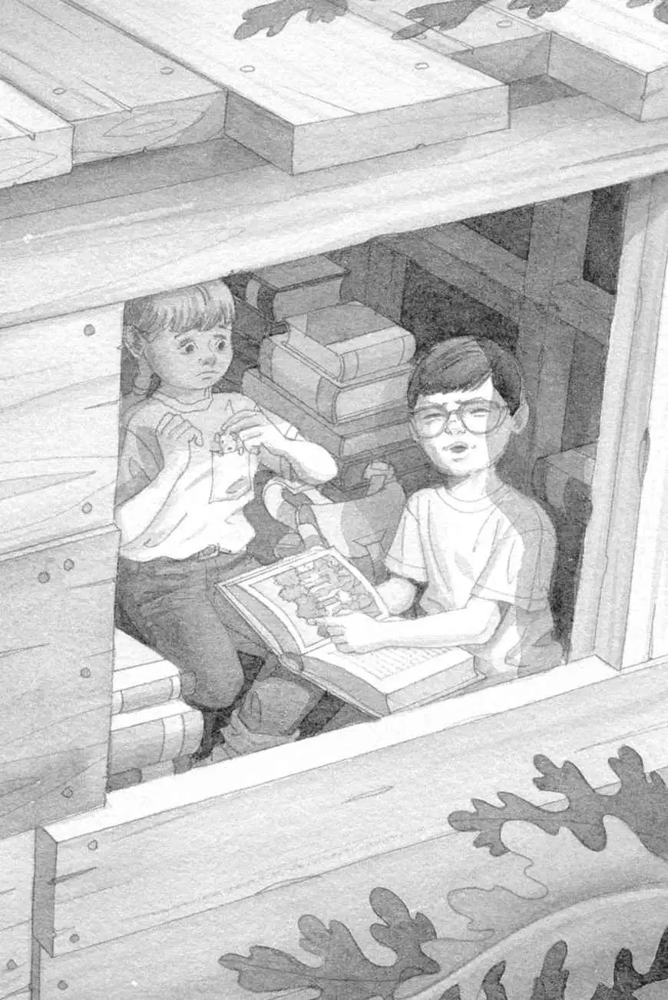

“Wow,” said Jack, picking up the book. “The ninja book was open yesterday. Now this one. Who opened them?”
Jack closed the book and looked at the cover.
It showed a picture of a green forest. The trees were very tall and close together.
On the cover were the words The Rain Forest.
“Oh, wow,” said Jack.
“Oh, no,” said Annie.
“What’s wrong?” said Jack.
“I learned about the rain forest in school,” said Annie. “It’s filled with big bugs and spiders.”
“I know,” said Jack. “Half of them have never even been named.”
“It’s creepy,” said Annie.
“It’s neat,” said Jack. He wanted to take lots of notes in the rain forest. Maybe he could even name some unknown bugs.
“Neat? Yuk,” said Annie. She shivered.
“I don’t get it,” said Jack. “You weren’t afraid of dinosaurs.”
“So?”
“You weren’t afraid of the castle guards or the mummy’s ghost.”
“So?”
“You weren’t afraid of pirates or ninjas.”
“So?”
“You’re not afraid of really scary things. But you’re afraid of little bugs and spiders. That doesn’t make sense.”
“So?”
Jack sighed. “Listen,” he said. “We have to go there. To help Morgan. That’s why the book was left open.”
“I know that,” said Annie, frowning.
“Plus, the rain forests are being cut down,” said Jack. “Don’t you want to see one before it’s too late?”
Annie took a deep breath and slowly nodded.
“Okay, then, let’s go,” said Jack.
He opened the book again. He pointed to a picture that showed blue sky, green leaves, and bright flowers.

“I wish we could go there,” he said.
The wind began to blow.
Squeak.
“Stay here, Peanut,” said Annie as she put the mouse in her pocket.
The wind picked up. The tree house started to spin.
Jack squeezed his eyes shut.
The wind was whistling now. The tree house was spinning faster and faster.
Then everything was still.
Absolutely still.
Wild sounds broke the silence.
Screeeeeech!
Buzzzzzzz!
Chirp! Chirp!